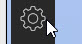
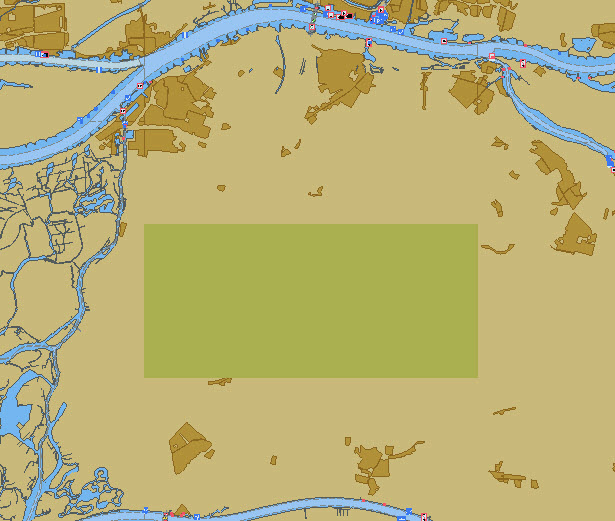
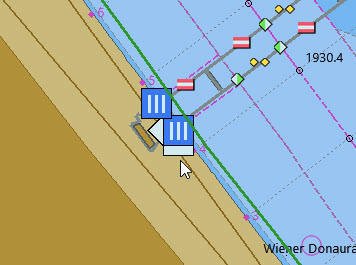

Karten
Herunterladen und Installieren von Inland ECDIS Karten
Optionen 
Seekaarten Gehen Sie zum Chart Downloader Reiter
Katalog hinzufügen
ChartCatalogs auswählen und dann OK
ENC Elektronische Navigationskarten sind Karten, in denen Objekte und Details, die für Inland ECDIS benötigt werden, vom Benutzer ausgewählt werden können. These charts are used in the Inland ECDIS Information Mode.
Wählen Sie The Netherlands Inland ENC Charts
OK
Ein Eintrag für die niederländischen Karten erscheint im Katalog.
Aktualisieren
Download gewählte Karten
Anwenden
Verzeichnis hinzufügen
Ordner auswählen
Anwenden OK
Anpassen der Kartenanzeige
Verschieben Sie die Karten, bis Sie die Niederlande sehen.

Auf der rechten Seite der Anzeige werden einige der Kartenzellen nicht angezeigt. Sie werden sichtbar, wenn Sie diese ins Zentrum der Anzeige bewegen, und die Zellen nachgeladen werden. Um diese Verzögerung zu vermeiden
Optionen Seekarten
Alle ENC Karten vorbereiten
Es kann einen Augenblick dauern, alle Zellen zu laden.
Anwenden OK
Kartenumrisse anzeigen in Anzeigeoptionen ausschalten


Am unteren Bildschirmrand sehen wir eine "Klaviertastatur". Sie symbolisiert die Karten, die wir aktuell im Blick haben. Ziehen wir den Mauszeiger über eines der Rechtecke ("Tasten"), wird uns die Zelle angezeigt und wir erhalten Zusatzinformationen, wie das Updatedatum.
Karten aktualisieren
|
Aktualisieren der Karten
Es ist zwingend erforderlich, dass die installierten Karten auf vorhandene Updates geprüft werden. https://www.vaarweginformatie.nl/frp/main/ Diese mehrsprachige Internetseite enthält Links, um die neuesten Karten herunterzuladen. |
Optionen Seekarten
Chart Downloader
Katalog auswählen…
Aktualisieren
Karten herunterladen…
Download gewählte Karten
Zeeland Compleet Woche 18-2022 konnte nicht aktualisiert werden. In diesem Fall war es notwendig, den Link zu verwenden:
Hier sehen Sie Zeeland Compleet Week 19-2022. Laden Sie die ZIP-Datei herunter und extrahieren Sie diese in das ENC Verzeichnis. Fügen Sie dann ein neues Kartenverzeichnis hinzu:
Alle ENC Karten vorbereiten
Nun werden die Karten von Woche 19 statt Woche 18 benutzt.
Weitere Karten hinzufügen
Dies ist ganz einfach für das Hinzufügen deutscher Karten.
Optionen Seekarten
Katalog auswählen…
Katalog hinzufügen
Suche nach Deutschland Inland ENC Karten
OK
Aktualisieren
Karten herunterladen…
Download gewählte Karten
Das könnte einige Zeit dauern.

Es wurden zwei veraltete Karten gefunden.
Ausgewählte Karten herunterladen
Optionen Seekarten
Karten-Dateien
Um später Verzögerungen beim Anzeigen zu vermeiden:
Alle ENC Karten vorbereiten
Anwenden OK
Wir haben nun niederländische und deutsche iENC Karten zu OpenCPN hinzugefügt.
Kartenblatt Optionen
Kartenumrisse anzeigen zeigt uns die verfügbaren ENC-Zellen.

Um uns die Details anzuschauen zoomen wir ein..
Zusatzinformationen in den Karten
Zusätzlich zur Standardansicht stehen zusätzliche Details zur Verfügung.
Dies ist eine österreichische Karte aus der Nähe von Wien.
Rechtsklick
Objekt-Abfrage…
Das Attribut PICREP enthält den Link zu einer Bilddatei für die Brücke.

Interessant ist, dass auf der Karte ein Abstand von 8,5m nahe der Mittellinie des Fahrwassers angezeigt wird. Auf dem Bild sind 11,22 m im Zentrum der Brücke verfügbar.

Rechtsklick
Das Objekt ist ein Notice mark.
Mit dem Attribute catnmk , die maximal erlaubte Anzahl von nebeneinander liegenden Schiffen.
Attribut INFORM maximale Anzahl an Schiffen sind 3, aber keine Frachtschiffe.
Detailinformation zu den Informationen in IENC: